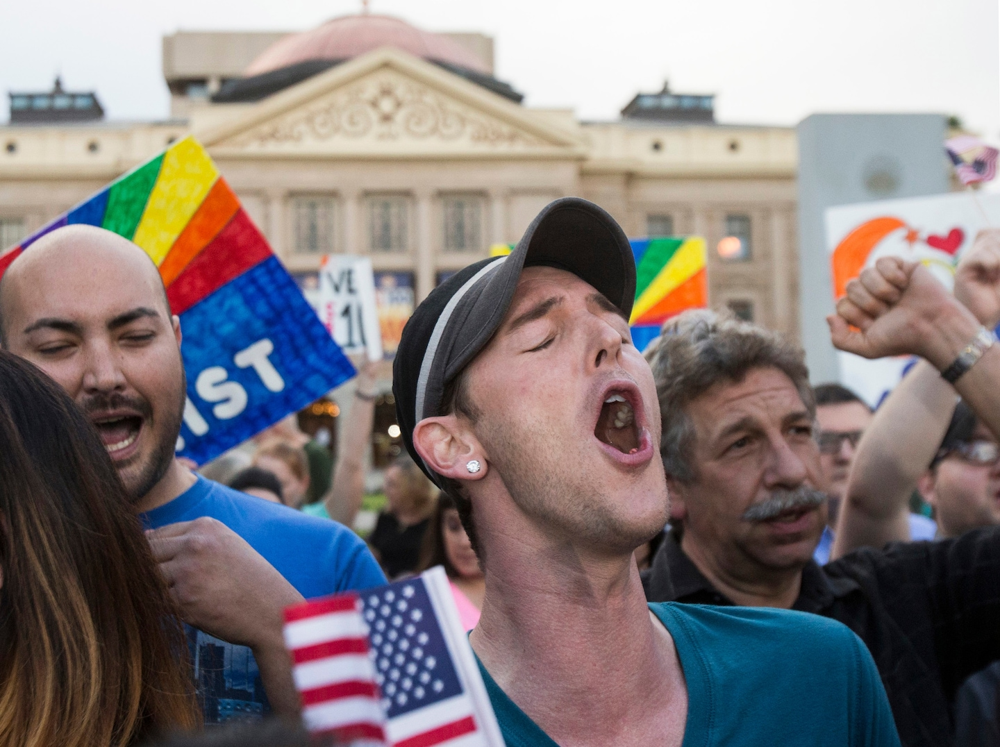

The HIV and AIDS epidemic of the 1980s dealt a devastating blow to the gay community, which was already struggling to gain acceptance in society. As medical evidence linking the disease to homosexuality began to mount, many people began to associate HIV and AIDS exclusively with the gay community. This led to widespread discrimination and prejudice against gay people, with many people blaming them for the spread of the disease. As a result, some states even went so far as to pass anti-gay laws that banned gay sexuality altogether, further marginalizing the gay community.
However, the gay community refused to be silenced and launched a massive protest in response to these injustices. People from all walks of life came together to demand equal treatment and an end to discrimination against gay people. The protest was unstoppable, with thousands of people taking to the streets to demand change. The gay community's efforts paid off over time, as governments began to listen to their demands and started to legalize gay activities.
This was a major victory for the gay community, as it meant they no longer had to hide their true selves and could live authentically without fear of persecution. While the fight for equal rights is far from over, the progress made in the 1980s helped pave the way for a more inclusive and accepting society. It's important to remember the struggles of the past and continue to work towards a better future for all.
 Continue